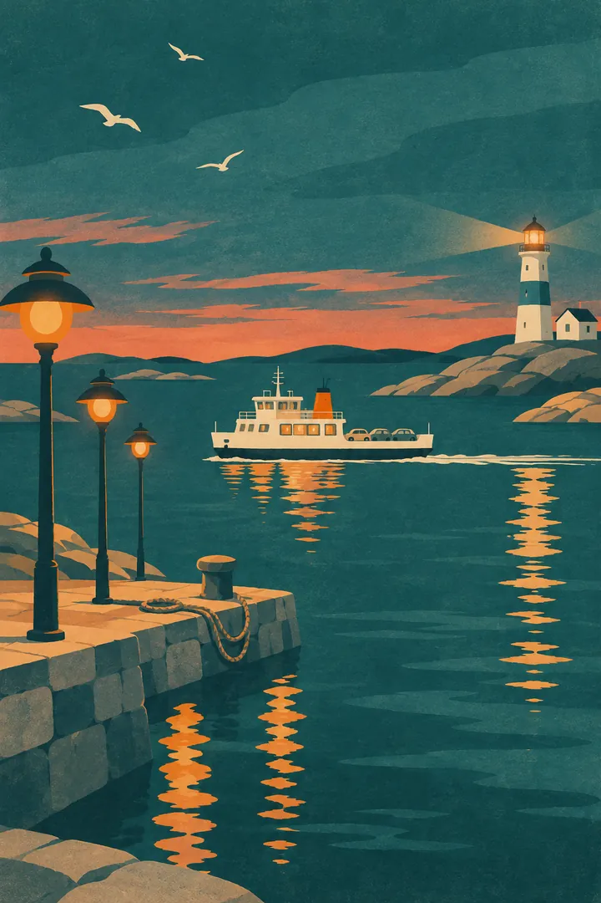
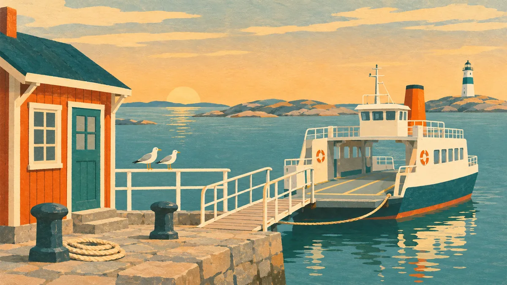

--:--
Book a crossing

Fares
Single crossing, either way. Return is the same again.
The crossing

Twenty-five minutes, quay to quay. The Kittiwake carries twelve cars and seventy people, and she sails in most weathers.
Out of Harrowick you pass the Grey Skerries to port and the light on Calf Rock, then run in under the holm to the pier at Tern Holm.
Cars queue in the two lanes beside the red ferry office. Foot passengers wait on the quay and board last.